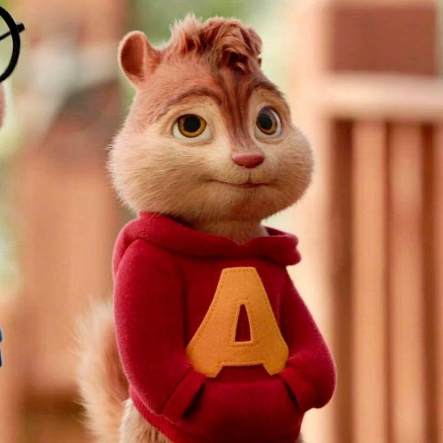
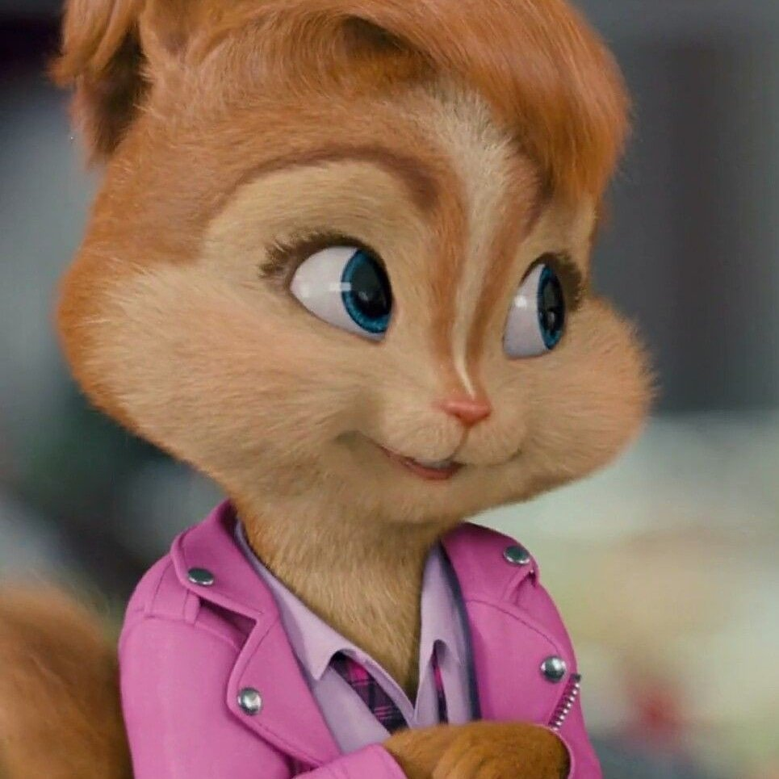
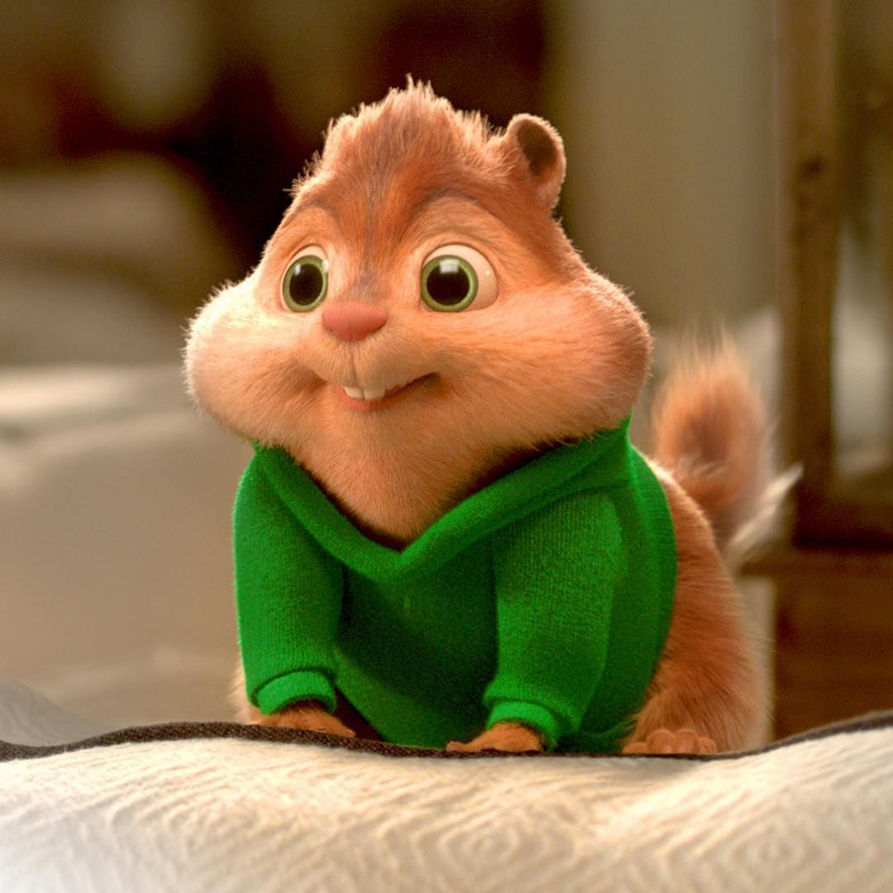

Элвин бурундук
Известно, что Элвин очень инфантильный и незрелый. Он очень озорной и любит дурачиться в неподходящие моменты. Он всегда сводит Дэйва с ума своими выходками до такой степени, что он отвергает его коронную фразу "ЭЭЭЭЭЭЭЭЛВИНННН !!!!!". Однако Элвин может быть очень серьезным, если захочет.
Британи бурундучиха
Бриттани — самка бурундука в цикле «Элвин и бурундуки». Лидер команды бурундушек. Одна из живущих в домике на дереве. Она помощник директора.
Теодор бурундук
Теодор - бурундук. Он очень милый и дружелюбный сластёна. Также он очень смешной, забавный и иногда немного глупый. Теодор носит зелёную кофту, синие штаны и кеды. Его глаза коричневые.
